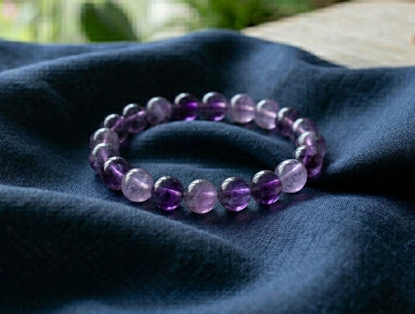

フミエ様
詳細のご希望、ありがとうございます。
フミエ様のために選んだ石について、
詳しくお伝えしますね。
フミエ様の命の流れを視させていただき、
今のフミエ様に最も必要な石を3つ選びました。
フミエ様は、静かに流れる清流のような水のエネルギーを持つ方です。
深く、誠実で、言葉を大切にする。
でも──
その誠実さゆえに、
「届けたいのに届かない」という感覚が
繰り返されやすい流れがあります。
今年後半に向けて、
縁が動き始める流れが来ています。
その流れを最大限に活かすために、
フミエ様のエネルギーと
罔象女神（みつはのめのかみ）が
深く共鳴する3つの石を選びました。

清らかな水の気を宿す石。
フミエ様の水のエネルギーと最も深く共鳴します。
コミュニケーションの流れを整え、
「伝えようとしなくても、自然と伝わる」
という縁の流れを作ってくれる石です。
改まって届けようとするほど重くなる──
フミエ様のその特質を、
この石がそっと緩めてくれます。

水の神・罔象女神と最も共鳴が強い石です。
月の満ち欠けのように、縁の流れを穏やかに整え、
静かに、確かに引き寄せていく力があります。
フミエ様の命の流れには「天と月」の二重の守護があります。
ムーンストーンは、その月の守護を日常の中で
ずっとそばに置いておける石です。
直感と感性を磨き、
あなたの自然体の魅力を引き出してくれます。

精神の守護と、内なる静けさの石。
「どう伝えれば届くか」
頭の中でぐるぐると考えすぎてしまうとき、
この石が、そのループを静かにほどいてくれます。
考えすぎることを止めるのではなく、
深く考える力を、知恵として使えるように整えてくれる石です。
アクアマリン・ムーンストーン・アメジスト。
この3つをフミエ様専用に組み合わせて、
一つひとつ手作りで仕上げます。
罔象女神への祈祷とエネルギーチャージを込めて、
フミエ様のもとへお届けします。
身につけていくうちに、
「届けようとしなくても、自然と伝わる」という感覚が
少しずつ戻ってきます。
頭の中でぐるぐると回り始めるとき、
石が静かにそのループをほどいてくれる。
日常の中で、守護がそばにある。
そして今年の夏に向けて──
縁が動き始めるその時期に、
エネルギーが整った状態で臨めるようになります。
フミエ様の場合、
今年の7月から、
縁の最初の変化が出始める流れがあります。
パワーストーンのエネルギーが
しっかりと馴染むまでには、
通常2〜3週間ほどかかります。
今から始めることで、
ちょうど縁が動き始める時期に
エネルギーが整った状態になります。
- ご注文から7〜10日以内に発送
- 追跡番号付きで安心
- 専用の浄化・エネルギーチャージ済みでお届けします
今回ご購入いただいた方には：
- パワーストーンの取扱い・浄化方法のご案内
- ご購入から3ヶ月間、気になることがあればいつでもご相談いただけます
ご希望の方は、
「ブレスレット希望」とメッセージをお送りください。
ご不明な点があれば、
お気軽にお尋ねくださいね。
フミエ様の縁が、静かに、確かに動いていきますように。